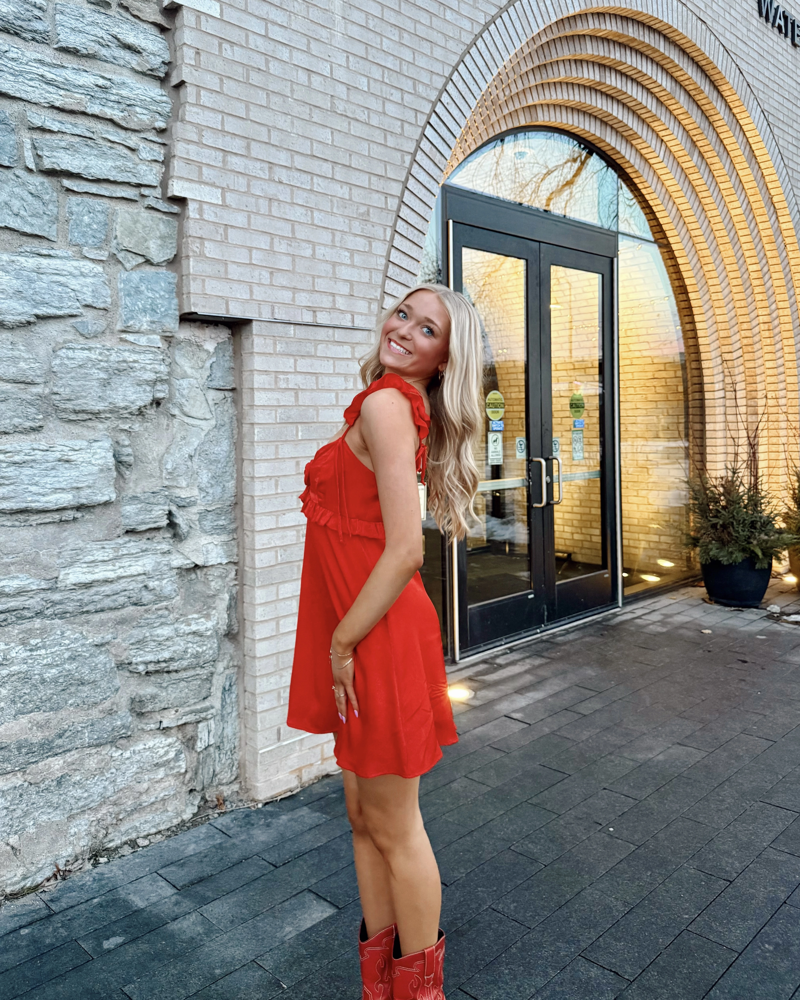

About Me
I am a digital marketing and social media professional passionate about building cohesive brand identities and creating content that drives real engagement. My experience across higher education, government, and small businesses ranges from social media strategy, multimedia content creation, and data-driven storytelling that elevates brand presence.
I am currently pursuing a double major in Digital Media Arts (Media Design) and Strategic Communication (Advertising & PR), with coursework in web design, interactive design, copywriting, social media strategy, digital analytics, photography, and videography, all of which translate directly across platforms.
What is Digital Marketing?
I am a digital marketing and social media professional passionate about building cohesive brand identities and creating content that drives real engagement. My experience ranges across higher education, government, and small businesses shaping branding strategies, multimedia content creation, and storytelling that connects authentically.
As a photographer, graphic designer, content strategist, and social media manager, I bring both creative storytelling and platform analytics together in every project.

Check Out My Work:

Social Media

Graphic Design